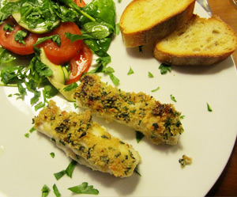

Seehecht mit Knuspermantel
5 von 6Fischfilets auftauen. Zwiebel, Knoblauch und Peterli in viel Butter andämpfen und Paniermehl dazu geben. Mit Zitronensaft, Salz und Pfeffer abschmecken. Die Kruste auf den Fisch verteilen und auf ein Blech geben. Im Ofen bei ca. 200 Grad überbacken, mit Salat servieren.
